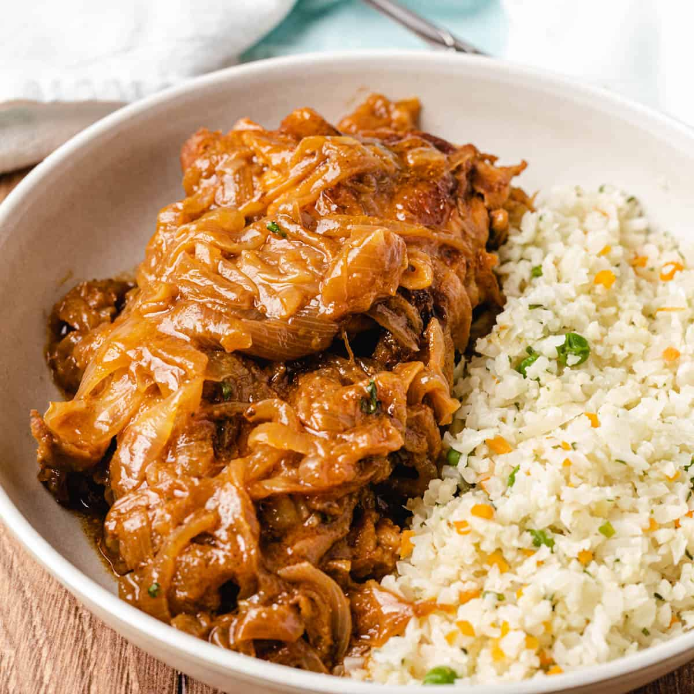

Home
YASSA recipe

Brief Description:
Poulet Yassa is a Senegalese dish made of chicken that has been marinated in a mixture of garlic, lemon juice, Dijon mustard, and spices.
It has become very popular throughout West Africa and in other parts of the world.
Ingredients:
- 1 whole chicken
- 7 onions
- 3 lemons
- 1 tablespoon of mustard (optional)
- 1 head of garlic
- 1 fresh chili pepper
- 1 green bell pepper
- Salt, to taste
- Black pepper
Process
- Wash the chicken. In Senegal, we usually wash it with lemon and salt to remove the strong odor.
- Using a food processor, blend the garlic cloves, black pepper, half of the chopped bell pepper, and the chili peppers.
You'll get a paste that will be used as seasoning.
- Cut the chicken into medium-sized pieces and make incisions in each piece.
- Marinate the chicken with half of the seasoning paste, a generous tablespoon of mustard, 2 lemons, black pepper, a little salt, and refrigerate for at least 2 hours.
- Grill the chicken in the oven or, ideally, on a barbecue.
- Cut the onions into cubes or slices, as you prefer. In a pot, heat some oil. Once the oil is slightly hot, add the chopped onions.
Stir to prevent them from sticking to the bottom of the pot. Add a bay leaf and the chili pepper.
- Keep an eye on the onions as they cook: when they turn translucent, add the rest of the seasoning paste, salt (not too much), and black pepper. Add the juice of a large lemon and a little water.
- Stir well, then let it simmer for about 30 minutes on low heat.
- Add the grilled chicken pieces into the sauce.
- Serve with white rice.